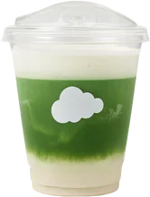
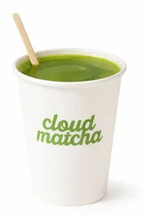
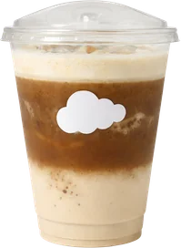
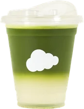
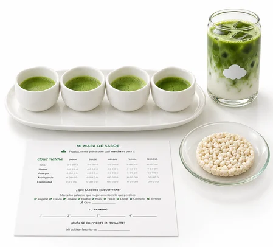

Matcha de verdad
Kyoto Matcha, origen único. Esto es lo que hay detrás de cada vaso.

Kyoto, JapónUn solo origen,
un solo sabor
Nuestro matcha viene de Kyoto, Japón, y es de origen único. Un sabor limpio, verde y profundo que se nota en cada latte.
[A confirmar] Productor o región exacta en Kyoto, grado del matcha y los cultivares que se usan en la cata.
De la hoja a tu vaso
- 01
Sombra
Las plantas de té se cubren del sol antes de la cosecha. Así ganan su verde intenso y su sabor dulce y umami.
- 02
Piedra
Las hojas se muelen despacio hasta volverse un polvo finísimo: eso es el matcha.
- 03
Batido
El polvo se bate con agua hasta quedar sedoso y con su espuma natural.
- 04
Tu vaso
Lo tomas como quieras: usucha, latte, con fruta, con agua de coco o en helado.
¿Cómo lo pides?
Cuatro formas de empezar si es tu primera vez en Cloud Matcha.

Usucha
Matcha en agua: la forma más pura de probarlo.
Matcha latte
Matcha sobre la leche que escojas, frío o caliente.

Hojicha
Té verde tostado, más suave y sin el amargor del matcha.

Con agua de coco
Matcha con agua de coco 100 % natural: el más refrescante.

4 cultivaresCata de matcha
Cata 4 cultivares de matcha y escoge tu favorito para un latte.
$145.500
Quiénes están detrás de la nube
[A confirmar] Historia de Cloud Matcha: quién lo fundó, cuándo abrió y por qué nació en Barranquilla. Y quién es Maya, la del Maya’s Special.
Tu matcha, en casa
Matcha y hojicha en polvo, en presentaciones de 30 g y 50 g.